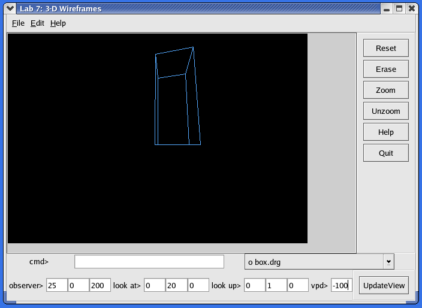

Overview
In this lab you will build upon an existing matrix class to create a transform class. This transform class will be used to render polyhedra from a user-specified
viewpoint using a perspective projection. This is a 3-week lab with two phases. A report is due for each phase as outlined below.
These examples show how the application will allow viewing of a model much as a camera allows viewing of the world.
Demonstration (during Friday lecture of week 10)
You will need to demonstrate your final project to the instructor during the
week 10 Friday lecture. The demonstration will count for 25% of your
Phase II project grade.
Activities
- Develop a transform class built around a matrix class.
Use this matrix class
class, which is free for educational use. Provide functions (perhaps including operator overloading) so that a convenient coding style for applying transforms is supported. The following is an example of one such style. "QPoint3" represents a 3-D point (not actually a Qt class).
Transform T;
T.applyTranslate(deltax, deltay, deltaz);
math::matrix<double> u(3,1), v(3,1), V(3,1), n(3,1), N(3,1);
// calculate V and N
u = cross(V,N);
u /= u.norm(); // normalize u
// more calculations
T.applyBasisChange(u, v, n); // objects aligned with u are now aligned with x, etc.
// apply a perspective transformation
// ultimately polyhedron::Draw will need access to this transformation
// ...
QPoint3 p; // and initialize somewhere
QPoint pprime = T * p; // transform a single point, accounts for non-unity h, discards z
QPointArray psPrime = T * myContainerOf3DPoints; // transform a bunch of points (perhaps in a matrix)
- Develop a polyhedron class. Objects of this class could just contain a container of line endpoint pairs (but not line objects – that would be inefficient – a polyhedron has 1 color, is read as a single object, etc.). A better implementation would only maintain one copy of each vertex, but this is not required.
- Allow the specification of polyhedra using files. The files lab7a.dat (cube), lab7b.dat (tetrahedron), and box.drg ("building" used in figure above)
contain examples that specify a polyhedra as a set of
edges. (i.e., There are two 3-D points per line. This is not the
best long term specification, but it is sufficient for the requirements
of this assignment.) You may find it necessary to edit these files to conform
to your polyhedron::Read.
- When it is time to Draw each polyhedron, you should perform the device transformation (invert the y direction and move the origin to the center of the drawArea).
- Allow the user to specify the observer position, the point the user is looking at (which will be rendered in the center of the window), and the look-up direction. The user must also specify the distance to the projection plane from the observer (which is also used as the projection reference point).
- An interface that allows the user to easily change a single parameter while being aware of the overall set of viewing parameters is required. See the figure for one example of such an interface.
- Augment your derived shell class so that the Zoom, UnZoom, Erase, and Reset buttons work
as follows:
- Zoom—perform a zoom by a factor of 2 by doubling the distance from the observer to the projection plane. (By definition, zoom means moving the projection plane, not the observer.)
- UnZoom—perform an unzoom by a factor of 2 by halving the distance from the observer to the projection plane.
- Erase—erase your image and update() the drawing area.
- Reset—reset the user inputs to some reasonable default values (what is reasonable, exactly, depends on the image, but you can used fixed defaults – up should be specified as preferring the positive y direction, the projection plane should be between the observer and the look at point, etc.) and draw the image.
- When it is time to update the view (e.g., the user pressed a particular button), you should calculate a composite transform that moves the drawing into the correct position (viewing transformation) and performs the perspective transformation.
Hints
- It is not necessary that your previous shape classes work in this 3-D lab.
- You should derive polyhedron from shape (or perhaps a variant of varshape).
- Polyhedra should be able to be read from files, but it is not necessary to provide a Write() function; no other method of entering polyhedra into your program is required.
- Work in phases. For example: transform class, viewing GUI, polyhedron reading, viewing transform without perspective, add perspective, etc.
- Make sure your transforms do not "damage" your geometry. An
Unzoom followed by a Zoom should recover the original image so don't let
Unzoom irrecoverably round off your coordinates. (When drawing always apply the complete transform to the original points.)
- #include <matrix.h> // place in /usr/local/include on your computer, or ./include on defiant
- The constructors for the matrix class do not guarantee that any particular values are in the matrix. Use .Null() for a matrix of zeros. Use .Unit() for an identity matrix.
- The easiest way to allow programs using matrix.h to work with Qt is to disable exceptions in the
matrix class. To do this, update your .pro file to include DEFINES *= _NO_EXCEPTION
- It is recommended that you use 3x1 vectors (use the matrix class to represent a vector in the mathematical sense, not the STL vector class) when calculating the values for the composite viewing
rotation matrix. Functions to perform the cross product and to normalize vectors will be useful. The matrix class does not have a normalize function, but it does have a function that will give you the magnitude of a vector.
- zprp=0 since the camera is located at the observer's eye.
- For matrixes, a *= b; means a = a * b; Be careful–when composing transforms, you usually need left multiplies: a = b * a;
- Since you will have several pieces of text to convert to numbers (as opposed as a stream to break into numbers), using the atof() [see the atof manual page on your Linux system] function instead of the istringstream extraction method is recommended. You may also want to experiment with the dial, slider or spinbox controls.
There are plenty of areas for extra credit with this assignment (e.g., surface modeling and animations [pans, zooms, etc.]), however
you must complete the basic requirements in order to receive the extra
credit. Consult with your professor in
advance before adding extra-credit elements to your program.
Phase 1 Lab Report (due by 11 P.M., the day of the week 9 lab): Transformation Class
Your lab report need not be self-contained. This means that it is
not necessary to restate the entire specification in your report.
- Prepare your report in the XML format described in the
Electronic Submission
Guidelines.
- Include...
- details of any problems you encountered;
- suggestions for how the lab could be improved;
- things you could not figure out how to do;
- a list of extra features that you implemented, if any;
- A summary of your activity log indicating how much time you spent
on the assignment. Follow the requirements for this item
from lab 2.
- A detailed test plan describing the
tests you ran on your transform class to
verify and validate its operation including a table that clearly indicates which
tests have been passed and those that have failed.
- Sufficient output to demonstrate that your transform class is functional.
- Documented source code
- If a file has not changed since the last assignment, note this in your
report and do not include the unchanged file.
- Follow the report submission requirements.
- Email this file to the instructor (durant@msoe.edu) with a subject and message
body indicating that this is your CS-321 Lab 7 Phase 1 submission.
Phase 2 Lab Report (due by 11 P.M., Friday of week 10): Working 3-D System
Your lab report need not be self-contained. This means that it is
not necessary to restate the entire specification in your report.
- Prepare your report in the XML format described in the
Electronic Submission
Guidelines.
- Include...
- details of any problems you encountered;
- suggestions for how the lab could be improved;
- things you could not figure out how to do;
- a list of extra features that you implemented, if any;
- A summary of your activity log indicating how much time you spent
on the assignment. Follow the requirements for this item
from lab 2.
- Documented source code—See
lab 2 for information on gensrc, which
helps format your code for your XML report.
- If a file has not changed since the last assignment, note this in your
report and do not include the unchanged file.
- Sample output: one or more screenshots of your program displaying a scene.
Include the data file used in the source code section of your report.
- Follow the report submission requirements.
- Email this file to the instructor (durant@msoe.edu) with a subject and message
body indicating that this is your CS-321 Lab 7 Phase 2 submission.
Course Objectives Addressed
- understand the design of graphical user interfaces.
- understand and be able to apply concepts of object-oriented programming, inheritance, polymorphism, and event-driven systems.
- be able to use reference materials to gain knowledge of an unfamiliar software library
- be able to implement multi-module software systems incorporating components developed by others.
- be able to clarify and document software requirements when specifications are initially incomplete or ambiguous.
- understand the need for extensive internal software documentation, and be able to provide it.